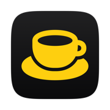
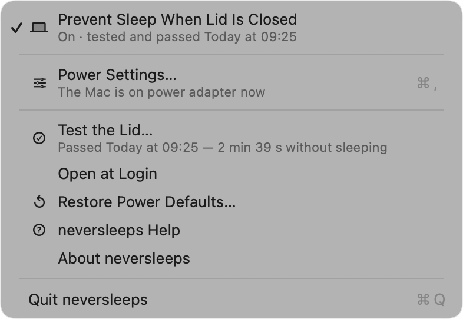
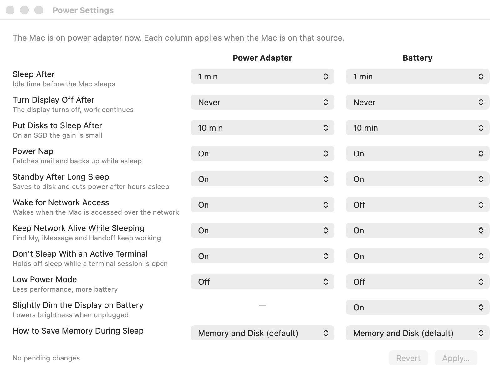

neversleeps PortuguêsRun Claude Code, a build, a download — any long task — with the Mac closed in a bag. One click in the menu bar, Touch ID, and a test that proves it worked.
curl -fsSL https://raw.githubusercontent.com/philipecomputacao/neversleeps/main/install.sh | bash
macOS 14 or later · Apple Silicon · no sudo · the installer verifies the sha256 before installing

This is the situation the app exists for. Three things have to be true — and only the first is the app’s job. The other two it teaches, honestly.
Click the cup → Prevent Sleep When Lid Is Closed → Touch ID. The cup fills up. That is the whole gesture.
Let the iPhone join on its own: Settings → Wi-Fi → Personal Hotspot → Automatically. Claude Code retries when the network comes back.
A Claude Code session is light: the Mac spends its time waiting on the API. A heavy build or looping tests inside a closed pocket are not.
Every “keep awake” app says it is on. This is the one that closes the Mac for a minute and checks the system’s own record to see whether it slept.
pmset -g log and its own heartbeat, and gives the verdict: passed or failed, with time and reason.
No Pro version, no subscription, no “unlock”. The code is open under the MIT license. The app uses no network, has no telemetry, does not check for updates: nothing leaves your machine. You can read every line.
caffeinate?caffeinate prevents idle sleep. Closing the lid overrides it: the Mac sleeps anyway. neversleeps sets pmset disablesleep, the only switch that survives the lid.
It can (Closed-Display Mode), but it is one option among dozens, and nothing tells you whether it actually held. neversleeps is one toggle, and it tests itself.
Yes: sudo pmset -a disablesleep 1 is exactly what the app runs. The app adds a visible state in the menu bar, one-click on/off, the real test, and a warning if you close the Mac with the lock off.
The app is signed but not yet notarized by Apple (that costs a yearly developer account). The one-line installer verifies the sha256 published with the release before installing. Installing manually, right-click → Open, once. The code is open; you can build it yourself.
For every power change, yes — through macOS’s own dialog (Touch ID or password). On purpose: there is no sudoers rule and no helper with root left on the system. In the Settings window, several changes cost a single authentication.
Depends on what is running. A Claude Code session is light. Heavy compilation or looping tests, inside a closed pocket, get hot — keep the bag open in that case. The lock does not change physics.
curl -fsSL https://raw.githubusercontent.com/philipecomputacao/neversleeps/main/desinstalar.sh | bash. The lock is a macOS setting and does not go away with the app: the uninstaller asks whether to restore the defaults.